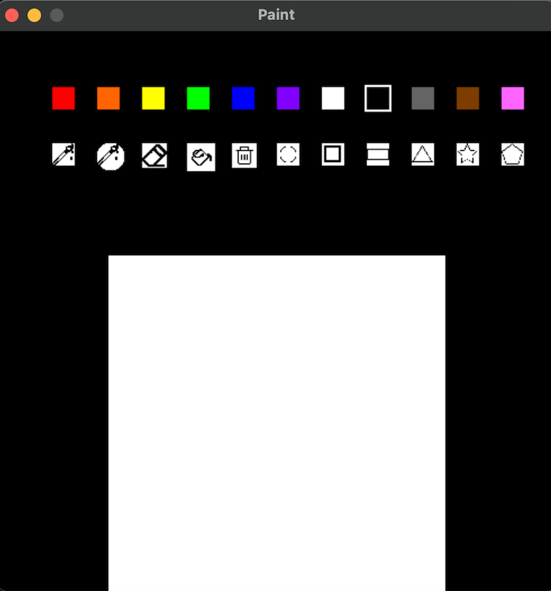
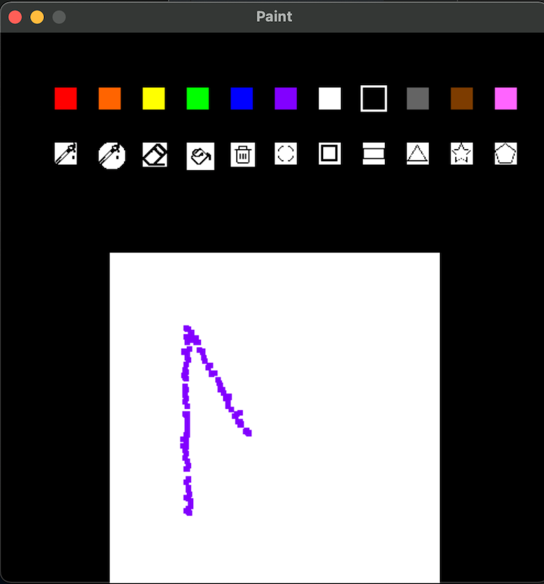
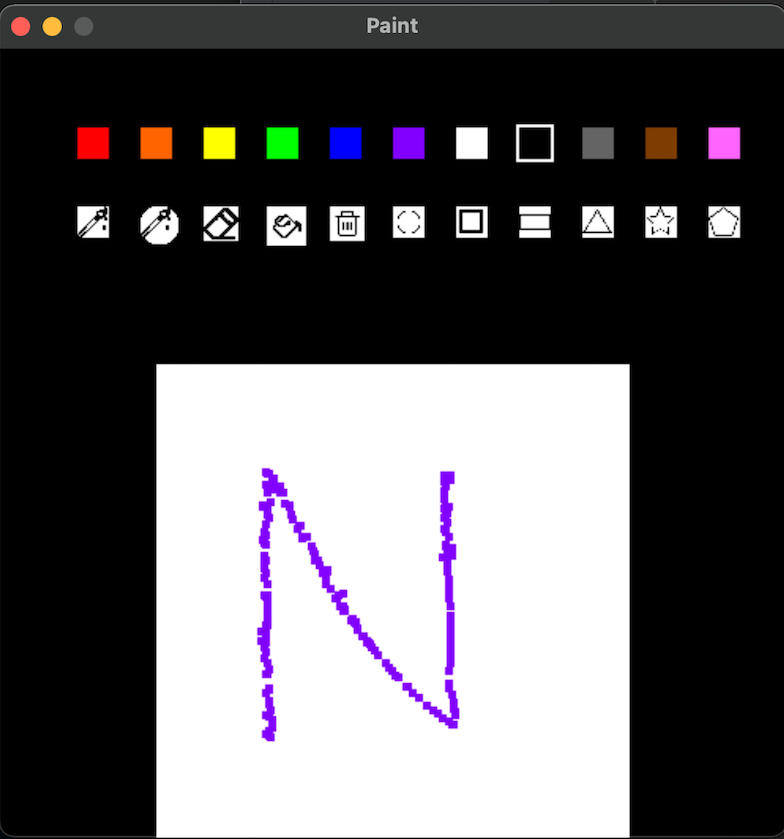
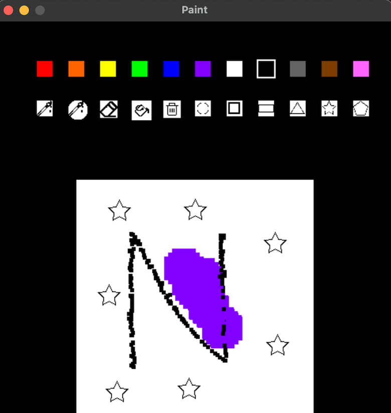
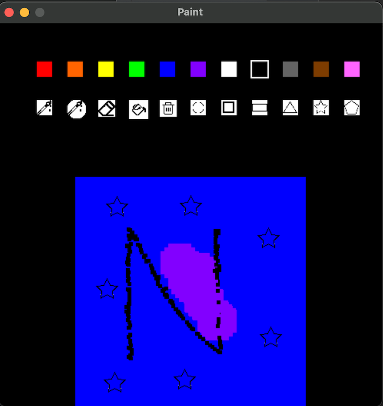

Projects
Coding Projects
Paint Canvas Implementation





Coded in C++ with the folowing functional requirements:
- There is initially a blank white screen and the Topbar with drawing tools and colors.
- To change the background color, click on the fill tool
- Click on the white screen with the mouse to change the color
-
Click on a tool with the mouse to select that tool
- Circle and square brush allow user to draw on the camvas.
- Eraser tool erases bursh strokes and shapes added to the canvas.
- Fill tool changes the background color of the canvas.
- Clear tool clears the whole canvas.
- Shape tools allows the user to place the chose shape where the mouse is clicked on the canvas.
- Click on a color with the mouse to select that color
- Use up and down arrows to shange size of the tools.
- Use the "d" key to start and stop drawing.
Other Projects
Second Year Week
7 days of programming centering second-year students in order to meet academic, vocational, mental, and social needs.
Monday (May 9)
Theme: Lazy Monday
Events:
- Students go to class in pajamas
- Food Truck: The Fat Shallot
- Movie: Spiderman: No Way Home
- Breakfast for Dinner in dining halls
Tuesday (May 10)
Theme: Spirit Day
Events:
- Students deck out in Northwestern gear
- Social Media campaign: #secondyearweeknu, #secondyearspiritnu
- Giveaway: Winner receives Airpod Pros
Wednesday (May 11)
Theme: Way Back Wednesday
Events:
- Movie Showing: Back to the Future
- Resource Fair participating with:
- CARE
- The Garage
- Off Campus Life
- Student organizations and Activities
- Northwestern Career Advancement
- Undergrad Research
- Academic Support abd Learning Advancement
- Chicago Field Studies
- NU Libraries
Thursday (May 12)
Theme: Olympic Day
Events:
- Students wear team colors
- Olympics Games
Friday (May 13)
Theme: Tropical Friday
Events:
- Students wear tropical/vacation clothing
- Lakefill Hangout with food trucks and games
Saturday (May 14)
Theme: Prom Saturday
Events:
- Second-Year Prom at Congress Plaza Hotel